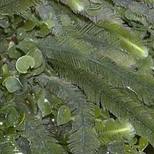
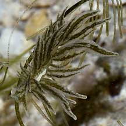

|
|
|
green seaweeds text index | photo
index
|
| Seaweeds in general |
| Green
seaweed Division Chlorophyta updated Aug 08
Where seen? Green seaweeds are commonly seen on many of our shores. Some grow on boulders, coral rubble and other hard surfaces. Others are found entwined around seagrasses. Like other seaweeds, some green seaweeds are seasonal (such as sea lettuce, Ulva sp. or the hairy green seaweed, Bryopsis sp.). Sometimes one kind of seaweed can be so abundant that it blankets vast areas of a shore in a green carpet. A few weeks later, the shore may be bare of this seaweed. Features: Green seaweeds are, well, green! They may be grass-green or slightly greyish, but they are seldom yellowish as some red and brown seaweeds are. Green seaweeds have similar chlorophyll pigments as those found in land plants. In fact, it is widely believed that land plants arose from green algae. Green algae are found in most habitats, not just in the sea. There are about 8,000 species ranging from microscopic algae (some of which may be growing on your bathroom walls right now) to delicate freshwater weeds found in rivers and lakes, and the large green seaweeds in the sea. Green seaweeds come in a wide range of shapes: translucent bubbles, flat sheets, hard flattened coins, bunches of long thin filaments, bunches of grapes, branched furry stems, coiled strips and more! Sometimes confused with seagrasses. Some feathery green seaweeds are also confused for one another. Here's more on how to tell apart green seaweeds that look like grapes, and different feathery green seaweeds and feathery green seaweeds and seagrasses. Human uses: Many green seaweeds are eaten directly by people. In the Philippines, sea grapes (Caulerpa lentillifera) is cultivated as food and sold fresh or salted. Some species are used as feritilisers and additives in animal feed (poultry, cattle, fish). Unlike brown seaweeds and red seaweeds, green seaweeds are not a major source of extracts used commercially. Role in the habitat: Like other seaweeds, green seaweeds provide food and shelter for a wide range of marine animals. Some of the animals that eat green seaweeds look like the seaweeds! Those commonly seen include the Ornate leaf slug (Elysia ornata) and a tiny hairy Bryopsis slug that is still awaiting identification and is often seen on the Hairy green seaweed (Bryopsis sp.) and the tiny Halimeda slug (Pusilla sp.) often seen on Big coin green seaweed (Halimeda sp.) During a seaweed 'bloom' there can be a corresponding explosion in the number and variety of animals that eat that particular seaweed. As well as the predators that eat the seaweed-eaters. |
 Three different kinds of green seaweeds Beting Bronok, Jul 07
 This slug looks exactly like the green seaweed that it probably feeds on Sentosa, Nov 03 |


| Division Chlorophyta on Singapore shores text index and photo index of green seaweeds on this site |
Links
References
|
|
|